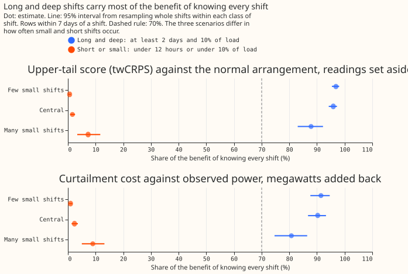
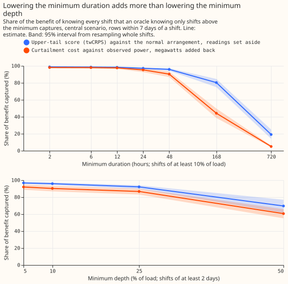
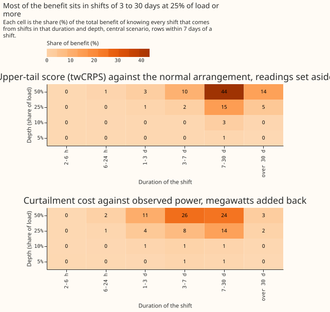
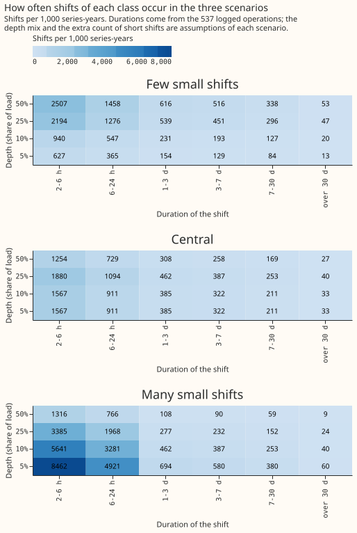
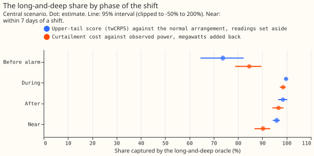

How much of the value of knowing about load shifts comes from long and deep shifts, and how much from smaller ones?
A load shift moves demand from one Primary substation to its neighbours for hours or days. We asked how much of the forecast improvement that comes from knowing every shift exactly (its true start, end, and megawatts) comes from long and deep shifts, so a detector that finds only those would still deliver most of the improvement. We call that improvement the benefit: the reduction in a forecast score compared with a forecast told nothing about the shifts. The two scores are the upper-tail score (twCRPS, which weights errors at high power) against the power the substation would have carried in its normal running arrangement (NRA), and the curtailment cost, which scores how badly a forecast misjudges when demand breaches a limit. We simulated 1,152 shifts at six Primary substations, in a grid of six durations (2 hours to 60 days) by four depths (5%, 10%, 25%, and 50% of the substation's load), and scored forecasts that know all of them, only the long and deep ones, or only the others. Knowing only shifts of at least 2 days and at least 10% of load captures 95.9% (94.3 to 97.2) of the upper-tail benefit and 90.3% (86.8 to 93.3) of the curtailment-cost benefit, in the central one of three assumed mixes of how often shifts of each duration and depth occur (95% intervals). The result rests on simulated shifts and on assumed frequencies of each depth.
Curtailment figures compare forecasts with each other and do not state money saved. A Primary substation has no published export limit and no known generator beneath it, so the metric treats its demand as the flow that can breach, as experiment 283 did.
Realistic detectors are not scored here. The shares above assume a detector that finds every shift of its class at once. Weighting each class by the recall of the long-and-deep detector, and subtracting its false-alarm harm, is a follow-up that waits for Part 1 of the long-deep detector experiment (see the plan page of the LSC detectors theme).
Share of the benefit by class of shift
Each cell is the share of the benefit of an oracle that knows every shift (PERFECT) that an oracle knowing only one class of shift (PERFECT_LD, the long and deep shifts, or PERFECT_SMALL, all other shifts) captures, in rows within 7 days of a shift, with a 95% interval from resampling whole shifts within each cell. The benefit of an oracle is the sum over those rows of the no-knowledge score minus the oracle's score. The upper-tail score is the threshold-weighted continuous ranked probability score (twCRPS) at the 95th percentile of earlier power, against the power the substation would have carried in its normal running arrangement (NRA), with readings inside a known shift set aside (the design of experiment 283). The cost column is the node-only curtailment cost against observed power at the 0.5 scaled limit, with the known shift's megawatts added back to the forecast (experiment 283's post hoc design, needed because setting readings aside predicts the wrong series against observed power).
| Scenario | Class | Upper-tail score vs NRA | Curtailment cost vs observed power |
|---|---|---|---|
| Few small shifts | Long and deep (2 days or more, 10% or more) | 96.9% (95.4 to 98.0) | 91.4% (87.6 to 94.6) |
| Few small shifts | Under 12 hours or under 10% of load | 0.6% (0.3 to 1.1) | 0.9% (0.3 to 1.6) |
| Central | Long and deep | 95.9% (94.3 to 97.2) | 90.3% (86.8 to 93.3) |
| Central | Under 12 hours or under 10% of load | 1.6% (0.8 to 2.6) | 2.4% (1.3 to 3.6) |
| Many small shifts | Long and deep | 87.9% (83.0 to 92.2) | 80.8% (74.7 to 86.5) |
| Many small shifts | Under 12 hours or under 10% of load | 7.3% (3.4 to 11.7) | 9.0% (5.0 to 13.2) |





Results
- Pre-registered prediction held: the long-and-deep share is 95.9% (94.3 to 97.2) on the upper-tail score and 90.3% (86.8 to 93.3) on cost, against 70% or more, and the share of the benefit from shifts under 12 hours or under 10% of load is 1.6% (0.8 to 2.6) and 2.4% (1.3 to 3.6), against under 15%. All three scenarios give the same verdict; in the many-small-shifts scenario the long-and-deep share falls to 87.9% and 80.8%.
- Duration matters more than depth. An oracle with a minimum duration of 6 hours instead of 2 days (and a minimum depth of 10%) adds 2.7% (1.7 to 4.0) of the benefit on the upper-tail score and 7.7% (4.9 to 11.0) on cost. A minimum depth of 5% instead of 10% adds 0.8% (0.3 to 1.5) and 1.7% (0.9 to 2.8). A minimum duration of 7 days is too long: the oracle then keeps 80.3% (74.9 to 84.6) of the upper-tail benefit and 44.2% (38.5 to 49.8) of the cost benefit (figure 2).
- All other shifts: the shifts outside the long-and-deep class, which include those from 12 hours to 2 days at 10% of load or more, carry 4.1% (2.8 to 5.7) of the upper-tail benefit and 9.7% (6.7 to 13.2) of the cost benefit. The "under 12 hours or under 10% of load" class is a subset of them.
- Frequency at which the conclusion changes: the shifts outside the long-and-deep class would have to be 10 times as frequent (upper-tail score) or 4 times as frequent (cost) as in the central scenario before the long-and-deep share fell to 70%.
- Cells that carry at least 5% of the benefit on their own (central scenario): for the upper-tail score, shifts of 7 to 30 days at 50% of load (43.5%), 7 to 30 days at 25% (14.9%), over 30 days at 50% (14.0%), and 3 to 7 days at 50% (10.2%). For cost, 3 to 7 days at 50% (25.5%), 7 to 30 days at 50% (24.1%), 7 to 30 days at 25% (13.9%), 1 to 3 days at 50% (11.1%), and 3 to 7 days at 25% (7.8%) (figure 3).
- By phase (central scenario, long-and-deep share): before a live detector would have flagged the shift, 73.8% (64.5 to 82.3) of the upper-tail benefit and 84.6% (78.8 to 89.7) of the cost benefit; during the shift 99.8% (upper-tail) and 98.6% (cost); in the 48 hours after the shift ends 98.5% and 96.7% (94.2 to 98.7) (figure 5). Smaller shifts matter most before the alarm arrives.
- Shape and site: the long-and-deep share is 97.2% (95.7 to 98.4) for constant shifts and 94.4% (91.0 to 96.8) for demand-shaped shifts on the upper-tail score, and 92.5% and 88.2% on cost. Leaving out any one of the six Primaries gives 94.6% to 96.8% (upper-tail) and 88.1% to 91.9% (cost), so no site decides the result.
- Cost against observed power needs the megawatts added back: with readings set aside the cost within 7 days of a shift is 87.5% worse than with no knowledge, as in experiment 283, so the cost shares use the megawatts-added-back arms. The cost benefit is 16.9% of the no-knowledge cost for shifts that add load and 18.1% for shifts that remove it.
- Absolute scores, rows within 7 days of a shift, points of effective capacity (against the NRA): CRPS 6.098 for no knowledge, 3.050 for PERFECT, 3.070 for PERFECT_LD, and 6.091 for PERFECT_SMALL; mean absolute error of the median 9.194, 5.312, 5.340, and 9.186; twCRPS 1.672, 0.677, 0.683, and 1.669. PERFECT_ADD scores against observed power: CRPS 3.648, twCRPS 1.062.
- Tail calibration (the score tables hold the 0.05, 0.5, and 0.95 quantiles only, so 0.01 and 0.99 are missing): no knowledge puts 15.8% of readings below the 0.05 quantile and 14.8% above the 0.95 quantile within 7 days of a shift; PERFECT 6.3% and 5.9%; PERFECT_LD 6.6% and 6.1%; PERFECT_SMALL 15.7% and 14.7%. Pinball loss at 0.05 and 0.95: 2.131 and 2.017, 0.782 and 0.804, 0.790 and 0.810, and 2.129 and 2.014.
- Ordinary rows: knowing every shift changes CRPS by +0.41% (0.23 to 0.65) and twCRPS by +0.47% (0.22 to 0.85) over 3.57 million rows (months resampled). A forecast that knows the shifts is not worse on ordinary rows; the small gain comes from rows where no-knowledge forecasts still carry the effect of a shift that ended earlier.
Frequency
- Duration frequencies come from the log. The 537 logged operations of 2 hours to 48 days, between January 2022 and March 2026, give 926 shift sides on the 16 series, which is 6.27, 3.65, 1.54, 1.29, 0.84, and 0.13 shifts per series-year for the six duration bins (2 to 6 hours up to over 30 days).
- Depth frequencies are assumptions. Only 16 of the 537 operations have a measured depth. The depth mix (5%, 10%, 25%, and 50% of load) is 10%, 15%, 35%, and 40% in the few-small-shifts scenario, 25%, 25%, 30%, and 20% in the central scenario, and 45%, 30%, 18%, and 7% in the many-small-shifts scenario, which also multiplies the two shortest duration bins by 3 because the log lists short shifts least (figure 4). The break-even multipliers above are the sensitivity test.
- Undercounted classes: short and small shifts are the hardest to see, and the log lists only some of them. The 17 block days and 37 unlabelled worst days of experiment 175, the detectors' census, and D8's drops are not added, because none of them records depth in a form this page can use, so the long-and-deep class may be undercounted too.
Checks
- Median minus mean forecast, per site: the mean absolute error (MAE) of the median forecast minus that of the mean forecast lies between -0.048 and +0.011 points for no knowledge and for PERFECT, and changes by at most 0.014 points between them (D5), so the width of an arm's forecast distribution does not move its median forecast.
- Mean forecast error beside each quantile-score contrast: within 7 days of a shift PERFECT lowers the MAE of the mean forecast by 42.2% and the CRPS by 50.0%, the same direction.
- Explicit arms against selection: the explicitly run PERFECT_LD arm captures 96.6% of the upper-tail benefit and 91.1% of the cost benefit, against 95.9% and 90.3% from selecting the long-and-deep shifts out of the PERFECT arm. The explicit PERFECT_SMALL arm captures 3.0% and 8.8%.
- Trigger that fired: the long-and-deep detector experiments are designed on this result, which has not been replicated. A fresh Sonnet agent audited the method (Opus was not used, as the brief required); see "Audit". No Opus audit run.
Audit
- Headline reproduced from the raw score tables with independent code: 95.90% on the upper-tail score and 90.28% on cost, 1,079 scored shifts, explicit PERFECT_LD 96.65% and 91.12%, explicit PERFECT_SMALL 3.02% and 8.82%. Accepted.
- No leakage found: for 283,439 rows whose forecast cutoff precedes every shift onset in the world, every arm equals no knowledge exactly. Accepted.
- The ambiguous-row rule matters: without it the selected long-and-deep share is 87.0% (upper-tail) and 79.8% (cost) against 96.4% and 92.6% for the explicit arm, and with it the gap is under 1 point. Accepted; the explicit arms are quoted beside the headline.
- Per-shift additivity is not exact: on shifts outside the long-and-deep class, PERFECT_LD alone earns 33% (upper-tail) and 11% (cost) of PERFECT's benefit, because the filter of no knowledge still carries a neighbouring long shift. Those shifts hold under 5% of the total, so the totals agree. Accepted as a caveat.
- Row weighting: normalising each shift's benefit by its number of scored rows gives a long-and-deep share of 88.5% (upper-tail) and 80.4% (cost), still above 70%. The page headlines the row-summed share, because a long shift changes more rows. Accepted as a caveat.
- Depth mix can decide the cost verdict: with only 5% and 10% depths, the long-and-deep share falls to 72.0% (upper-tail) and 63.5% (cost), below the 70% bar on cost. The depth mix is an assumption, so a measured depth for the logged operations is the first step before porting anything. Accepted as a caveat.
- Not checked: the realism of the simulated worlds, and the months used to tune the filter, which interleave with the scored months for every arm alike.
Caveats
- Shifts are simulated and idealised. The true start, end, and megawatts are known, shifts at one site are at least 7 days apart, and half remove load and half add it. Solar-shaped shifts are not run.
- Rows within 7 days of two shifts are left out. The score table gives such a row to the later shift, so its score would credit that shift with the effect of the earlier one. The rule drops 697,129 of 6,563,096 near-shift rows (10.6%).
- Cells are uneven. 1,079 of the 1,152 shifts have scored rows after the rule, 37 to 48 per (duration, depth) cell with both shapes pooled. The two shapes are not scored separately beyond the check above.
- Benefit weights rows equally, and the depth mix is assumed. A long shift has more rows, so its benefit grows with its length. The share is a share of forecast skill summed over rows, not over shifts. With only 5% and 10% depths the cost share falls to 63.5% (see "Audit").
- The forecasts are experiment 208's cached member forecasts with a Kalman filter on recent errors, with no retraining, so the contrast cannot depend on a retraining schedule.
What to try next
- Weight the shares by realistic recall. Multiply each cell's benefit by the recall of the long-and-deep detector in that cell, and subtract its false-alarm harm, once Part 1 of the long-deep detector experiment reports.
- Measure depth for the log of operations. A measured depth for every logged operation would replace the assumed depth mixes.
Arms and rows
- Arms: no knowledge (K0); PERFECT, PERFECT_LAG, PERFECT_LD, and PERFECT_SMALL with readings set aside; the same four with the known megawatts subtracted from the readings and added back to the forecast (post hoc). Ladder arms (minimum duration and depth) are computed by selection.
- Rows: 143 simulated worlds, 1,079 scored shifts, six Primaries (D5, D9, D10, D11, D14, D16), rows within 7 days of a shift (target times from August 2024 to June 2026), plus every fourth daily run's ordinary rows.
- Cost: node-only, 12 to 36 hour leads, scaled limit 0.5 (0.75 and 0.9 give 91.2% and 93.1%), GBP 2,000 per MWh.